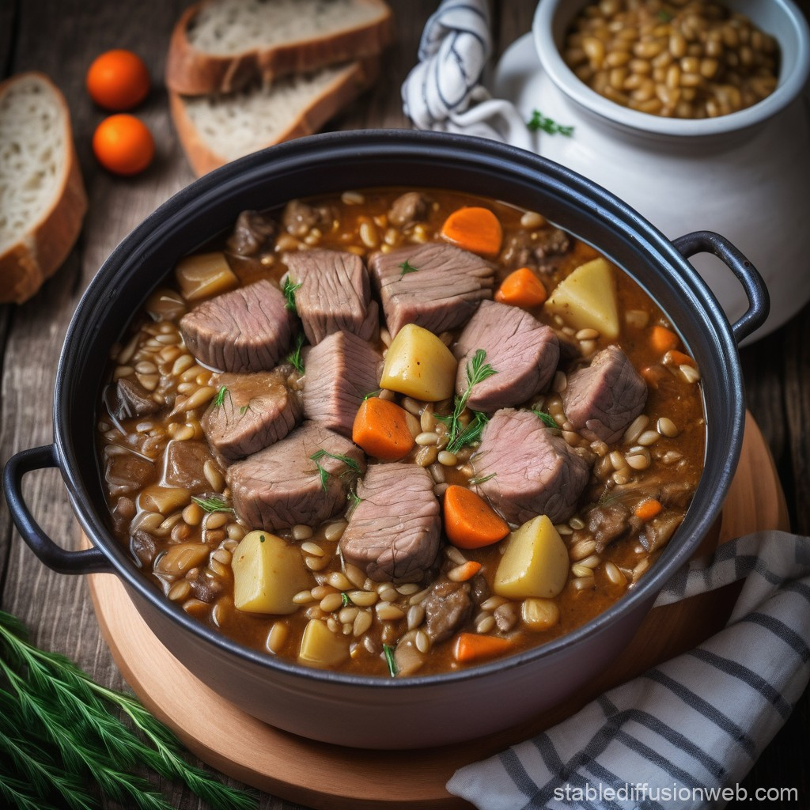

Stew of Lamb and Barley

Description
A Viking-style lamb and barley stew would have been a nourishing dish during long feasts, perfect for Odin's warriors in Valhalla.
Ingredients
- 1 lb lamb (cubed)
- 1 onion (chopped)
- 2 carrots (sliced)
- 2 cloves garlic (minced)
- 1 cup barley
- 4 cups vegetable or beef broth
- 1 teaspoon thyme
- 1 bay leaf
- Salt and pepper to taste
Steps
- In a large pot, brown the lamb cubes in a bit of oil.
- Add onions, carrots, and garlic, sautéing for a few minutes until softened.
- Stir in the barley, broth, thyme, and bay leaf.
- Bring to a boil, then reduce heat and simmer for 1.5 to 2 hours until the lamb is tender and the barley is cooked.
- Season with salt and pepper before serving.